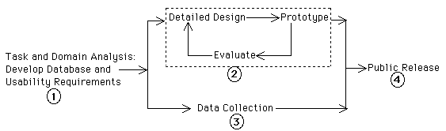

| Domain knowledge is extensive, diverse and very difficult to acquire, e.g., requires in-depth training in developmental genetics. The entities, processes, and relationships that define the basic structure of domain knowledge (i.e. domain ontology) are constantly changing as the research discipline evolves; these changes are not instantaneous, taking months or years to propagate through the community. | Domain knowledge may be extensive and fast-growing. However, the basic business model and the relevant domain entities and procedures associated with it are usually established by executive decree and are relatively stable. | |
| Many forms of formal and informal information exchange exist. Formal information exchange (e.g. publication) is highly institutionalized to guarantee accuracy and proper attribution; informal information exchanges abound and are ever-changing as workers migrate between labs, people enter and leave the community, and projects change. | Well-defined channels of information exchange have been defined by management. Informal means of information exchange exist as well, but are generally stable once established. | |
| Labs form the basic social group, with each lab headed by a principal scientist and containing other research scientists, post-docs and doctoral students. Labs are loosely-connected into a global scientific community. Although certain scientific standards exist, there is much variation in the detailed research practices (e.g. measurement, data collection) of different labs. | Work groups form the basic social group, forming the leaves of a hierarchical corporate structure. A uniform set of working procedures for each group is dictated from above; work groups are ultimately directed by a single executive entity. | |
| Labs and individual scientists within them are both cooperative and competitive. Progress of the discipline depends on sharing research results; success of the individual depends on attribution of results to the individual. | Success of the individual is intimately tied to the success of the work group and, more generally, to the success of the corporation. Unfettered information flow within the company is encouraged. |
The basic structure of the design process is the same for both participatory and user-centered approaches; our design process (Figure 1) follows the basic steps of user-centered design described in texts like [12]. In the following paragraphs, we describe our execution of each design phase, with particular emphasis on how we addressed the unique challenges associated with participatory design for a widely-distributed scientific community:
